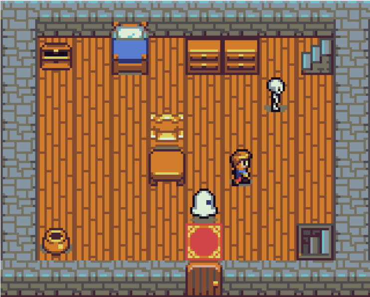

Mes compétences :


Mes réalisations :
Système de Gestion Intégré pour Promotion Universitaire

J'ai conçu et développé une plateforme web ainsi qu'une application Java intégrée dédiée à la gestion centralisée d'une promotion universitaire, incluant la création d'une base de données structurée de A à Z. Cet outil permet d'automatiser l'organisation administrative et pédagogique en gérant les profils des étudiants et enseignants, la formation de groupes de travail et la mise en place de sondages décisionnels. L'objectif était de simplifier la vie de la promotion en regroupant toutes les interactions clés au sein d'une interface unique, fluide et intuitive.
Pour vous connecter au site, essayez différents logins et mots de passe parmi ces derniers pour accéder au portail étudiant (le mot de passe est le même que le login) :
Login : ktop
Login : mcharro
Pour vous connecter au site, essayez différents logins et mots de passe parmi ces derniers pour accéder au portail enseignant (le mot de passe est le même que le login) :
Login : spicher
Login : msauver
Accéder au siteJeu en vue de dessus 2D
Dans le cadre de ce projet, j'ai développé un jeu vidéo d'aventure en 2D (vue de dessus) programmé en C++. En partant d'une structure de base, j'ai conçu le moteur logique permettant de déplacer le personnage de manière fluide et de gérer l'affichage des éléments graphiques à l'écran. J'ai également mis en place un système de détection de collisions précis, indispensable pour que le personnage puisse interagir avec son environnement et collecter des pièces afin de valider les niveaux. Ce projet m'a permis de maîtriser les fondamentaux de la physique de jeu et la gestion des interactions en temps réel.
Participation à la Code Game Jam

J'ai participé à la Code Game Jam organisée par Antoine Chollet, un défi intensif de 30 heures consistant à créer un jeu complet sur le thème « La fête des clics ». Dans ce cadre, j'ai développé sous Godot un jeu 2D en vue de dessus intitulé « Déclic après la fête ». Le joueur y incarne un organisateur de soirée qui doit nettoyer sa maison avant le retour de ses parents : chaque objet ramassé déclenche un mini-jeu de nettoyage spécifique. Ce projet m'a permis de démontrer ma réactivité et ma capacité à concevoir une boucle de jeu originale et fonctionnelle sous une contrainte de temps extrême.
Accéder à la page du jeuApplication de gestion logistique : Cité Internationale Universitaire

J'ai développé une application Java dédiée à la gestion administrative et logistique de la Cité Internationale Universitaire de Paris. Ce logiciel permet de centraliser le suivi des résidences, d'organiser l'attribution des logements et de faciliter la gestion des flux d'étudiants internationaux. L'objectif était de concevoir une solution robuste et structurée capable de simplifier le quotidien d'une institution complexe à travers une interface de gestion claire et efficace.